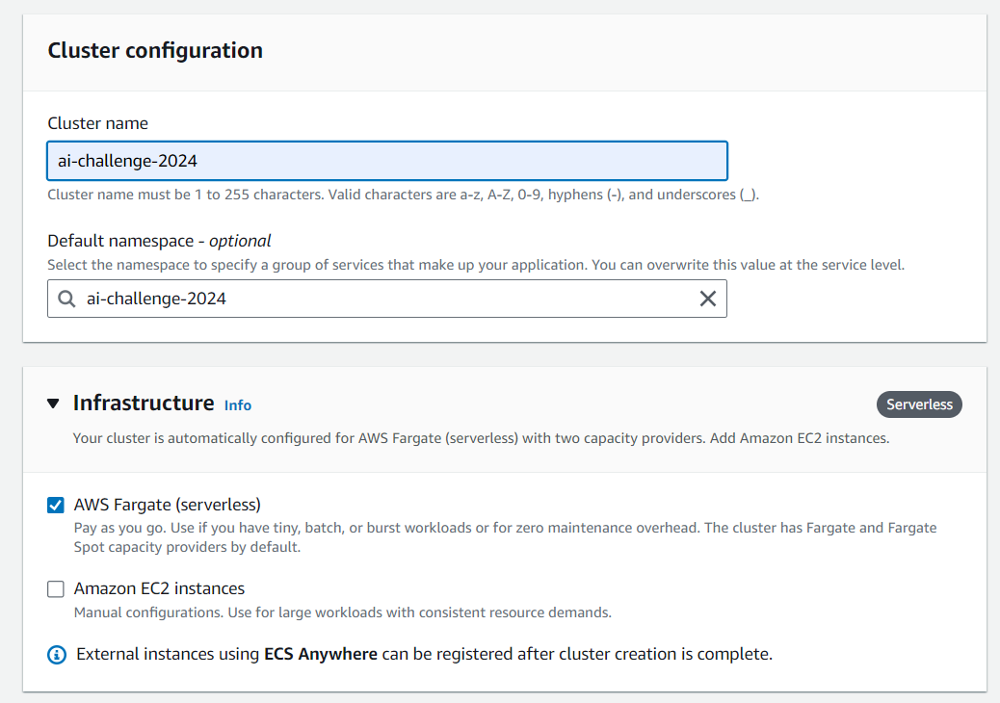
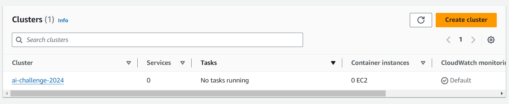

Wait for 2 minutes for the ECS cluster to be created.

{
"Version": "2012-10-17",
"Statement": [
{
"Effect": "Allow",
"Action": [
"s3:GetObject",
"s3:PutObject",
],
"Resource": "arn:aws:s3:::ai-challenge-2024/*"
},
{
"Effect": "Allow",
"Action": [
"logs:CreateLogStream",
"logs:PutLogEvents"
],
"Resource": "arn:aws:logs:*:*:*"
},
{
"Effect": "Allow",
"Action": [
"ecr:GetAuthorizationToken",
"ecr:BatchCheckLayerAvailability",
"ecr:GetDownloadUrlForLayer",
"ecr:BatchGetImage",
"logs:CreateLogGroup"
],
"Resource": "*"
}
]
}
{
{
"containerDefinitions": [
{
"name": "keyframes-container",
"image": "<aws account id>.dkr.ecr.ap-southeast-1.amazonaws.com/ai-challenge-2024:keyframes",
"cpu": 2048,
"memory": 6144,
"portMappings": [
{
"name": "80",
"containerPort": 80,
"hostPort": 80,
"protocol": "tcp",
"appProtocol": "http"
},
{
"name": "433",
"containerPort": 433,
"hostPort": 433,
"protocol": "tcp",
"appProtocol": "http"
}
],
"essential": true,
"environment": [
{
"name": "S3_BUCKET_NAME",
"value": "ai-challenge-2024"
},
{
"name": "S3_FOLDER_NAME",
"value": "keyframes"
},
{
"name": "URL_TO_DOWNLOAD",
"value": ""
}
],
"mountPoints": [],
"volumesFrom": [],
"logConfiguration": {
"logDriver": "awslogs",
"options": {
"awslogs-group": "/ecs/keyframes-task",
"mode": "non-blocking",
"awslogs-create-group": "true",
"max-buffer-size": "25m",
"awslogs-region": "ap-southeast-1",
"awslogs-stream-prefix": "ecs"
}
},
"systemControls": []
}
],
"family": "keyframes-task",
"taskRoleArn": "arn:aws:iam::<aws account id>:role/TaskRole",
"executionRoleArn": "arn:aws:iam::<aws account id>:role/TaskRole",
"networkMode": "awsvpc",
"placementConstraints": [],
"requiresCompatibilities": [
"FARGATE"
],
"cpu": "2048",
"memory": "6144",
"ephemeralStorage": {
"sizeInGiB": 21
},
"runtimePlatform": {
"cpuArchitecture": "X86_64",
"operatingSystemFamily": "LINUX"
},
"tags": []
}
}
The core configuration specifying how the container runs within the task:
Container Definitions
name: keyframes-container – The name of the container.
image: <aws account id>.dkr.ecr.ap-southeast-1.amazonaws.com/ai-challenge-2024:keyframes – The Docker image stored in Amazon ECR that the container will use.
cpu: 2048 – Allocates 2 vCPUs to the container.
memory: 6144 – Allocates 6 GB of memory to the container.
portMappings:
containerPort: 80 – Exposes port 80 for HTTP traffic.containerPort: 433 – Exposes port 433 for traffic (note: may need correction to 443 for HTTPS).essential: true – Indicates that the container is critical for the task; if this container stops, the entire task will stop.
Environment Variables Environment variables passed to the container to configure behavior:
S3_BUCKET_NAME: "ai-challenge-2024" – Specifies the S3 bucket used to store keyframes.S3_FOLDER_NAME: "keyframes" – Specifies the folder within the S3 bucket where keyframes are stored.URL_TO_DOWNLOAD: "" – A placeholder for the URL that the container will use for downloads.Logging Configuration Sets up logging to AWS CloudWatch Logs for monitoring and debugging:
logDriver: awslogs – Uses the AWS Logs driver to send logs to CloudWatch.awslogs-group: /ecs/keyframes-task – Specifies the CloudWatch Logs group where logs are stored.awslogs-create-group: true – Automatically creates the log group if it does not exist.max-buffer-size: 25m – Specifies the maximum buffer size for logs.awslogs-region: ap-southeast-1 – Sets the AWS region for logging.awslogs-stream-prefix: ecs – Adds a prefix to log streams to help identify them easily.Task-Level Settings
family: "keyframes-task" – The family name of the task, used to identify it in ECS.taskRoleArn: arn:aws:iam::<aws account id>:role/TaskRole – Specifies the IAM role that grants the task permissions to interact with AWS services.executionRoleArn: arn:aws:iam::<aws account id>:role/TaskRole – Specifies the IAM role used by the ECS agent to pull images and publish logs.Network Configuration
networkMode: awsvpc – Uses the AWS VPC network mode, allowing the task to have its own network interfaces, security groups, and elastic network interfaces.requiresCompatibilities: ["FARGATE"] – Specifies that the task requires Fargate launch type.Resource Configuration
cpu: "2048" – Allocates 2 vCPUs to the task.memory: "6144" – Allocates 6 GB of memory to the task.ephemeralStorage:
sizeInGiB: 21 – Provides 21 GB of ephemeral storage for temporary data generated by the task.Platform Configuration
runtimePlatform:
cpuArchitecture: X86_64 – Specifies the CPU architecture.operatingSystemFamily: LINUX – Specifies the operating system family used.This task definition ensures a flexible, scalable, and secure environment for processing keyframes within AWS ECS using the Fargate launch type, allowing you to run containers efficiently without managing servers.